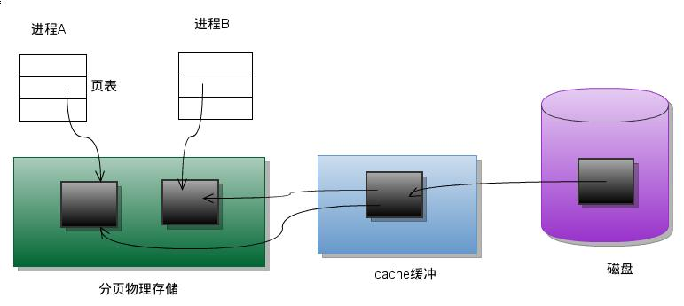
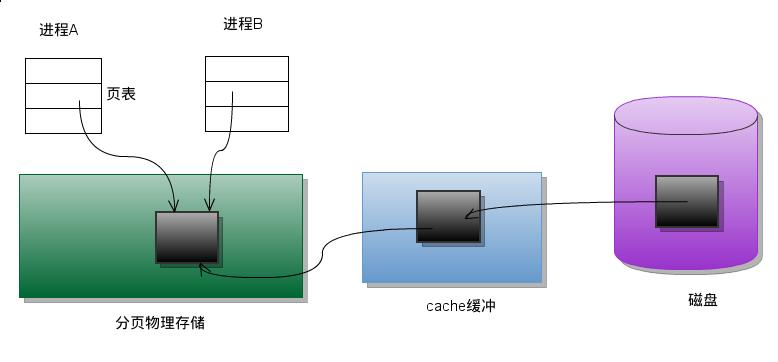
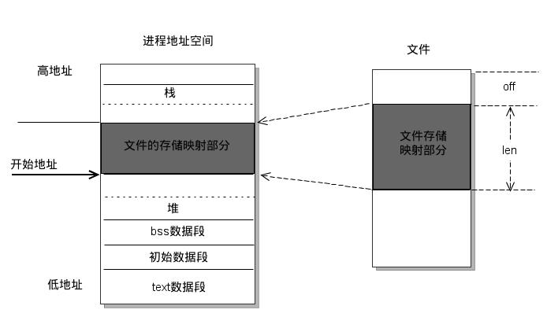

Slug: mmap-detail
共享内存可以说是最有用的进程间通信方式，也是最快的 IPC 形式, 因为进程可以直接读写内存，而不需要任何数据的拷贝。对于像管道和消息队列等通信方式，则需要在内核和用户空间进行四次的数据拷贝，而共享内存则只拷贝两次数据: 一次从输入文件到共享内存区，另一次从共享内存区到输出文件。实际上，进程之间在共享内存时，并不总是读写少量数据后就解除映射，有新的通信时，再重新建立共享内存区域。而是保持共享区域，直到通信完毕为止，这样，数据内容一直保存在共享内存中，并没有写回文件。共享内存中的内容往往是在解除映射时才写回文件的。因此，采用共享内存的通信方式效率是非常高的。
一、传统文件访问
UNIX访问文件的传统方法是用 open 打开它们, 如果有多个进程访问同一个文件，则每一个进程在自己的地址空间都包含有该文件的副本，这不必要地浪费了存储空间。下图说明了两个进程同时读一个文件的同一页的情形。系统要将该页从磁盘读到高速缓冲区中，每个进程再执行一个存储器内的复制操作将数据从高速缓冲区读到自己的地址空间。

二、共享存储映射
现在考虑另一种处理方法：进程 A 和进程 B 都将该页映射到自己的地址空间，当进程 A 第一次访问该页中的数据时，它生成一个缺页中断。内核此时读入这一页到内存并更新页表使之指向它。以后，当进程 B 访问同一页面而出现缺页中断时，该页已经在内存，内核只需要将进程 B 的页表登记项指向次页即可。如下图所示：

三、mmap() 及其相关系统调用
mmap() 系统调用使得进程之间通过映射同一个普通文件实现共享内存。普通文件被映射到进程地址空间后，进程可以向访
问普通内存一样对文件进行访问，不必再调用 read()，write()等操作。
mmap() 系统调用形式如下：
void* mmap(void* addr, size_t len, int prot, int flags, int fd, off_t offset)
mmap 的作用是映射文件描述符 fd 指定文件的 [off, off+len] 区域至调用进程的 [addr, addr+len] 的内存区域, 如下图所示:

参数 fd 为即将映射到进程空间的文件描述字，一般由 open() 返回，同时，fd 可以指定为 -1，此时须指定 flags 参数中的 MAP_ANON，表明进行的是匿名映射（不涉及具体的文件名，避免了文件的创建及打开，很显然只能用于具有亲缘关系的进程间通信）。
len 是映射到调用进程地址空间的字节数，它从被映射文件开头 offset 个字节开始算起。
prot 参数指定共享内存的访问权限。可取如下几个值的或：PROT_READ（可读），PROT_WRITE（可写），PROT_EXEC（可执行），PROT_NONE（不可访问）。
flags 由以下几个常值指定：MAP_SHARED, MAP_PRIVATE, MAP_FIXED，其中，MAP_SHARED, MAP_PRIVATE 必选其一，而 MAP_FIXED 则不推荐使用。
offset 参数一般设为 0，表示从文件头开始映射。
参数 addr 指定文件应被映射到进程空间的起始地址，一般被指定一个空指针，此时选择起始地址的任务留给内核来完成。函数的返回值为最后文件映射到进程空间的地址，进程可直接操作起始地址为该值的有效地址。
四、mmap的两个例子
范例中使用的测试文件 data.txt：
aaaaaaaaa
bbbbbbbbb
ccccccccc
ddddddddd
-
通过共享映射的方式修改文件
#include <sys/mman.h> #include <sys/stat.h> #include <fcntl.h> #include <stdio.h> #include <stdlib.h> #include <unistd.h> #include <error.h> #define BUF_SIZE 100 int main(int argc, char **argv) { int fd, nread, i; struct stat sb; char *mapped, buf[BUF_SIZE]; for (i = 0; i < BUF_SIZE; i++) { buf[i] = '#'; } /* 打开文件 */ if ((fd = open(argv[1], O_RDWR)) < 0) { perror("open"); } /* 获取文件的属性 */ if ((fstat(fd, &sb)) == -1) { perror("fstat"); } /* 将文件映射至进程的地址空间 */ if ((mapped = (char *)mmap(NULL, sb.st_size, PROT_READ | PROT_WRITE, MAP_SHARED, fd, 0)) == (void *)-1) { perror("mmap"); } /* 映射完后, 关闭文件也可以操纵内存 */ close(fd); printf("%s", mapped); /* 修改一个字符,同步到磁盘文件 */ mapped[20] = '9'; if ((msync((void *)mapped, sb.st_size, MS_SYNC)) == -1) { perror("msync"); } /* 释放存储映射区 */ if ((munmap((void *)mapped, sb.st_size)) == -1) { perror("munmap"); } return 0; }
-
私有映射无法修改文件
/* 将文件映射至进程的地址空间 */ if ((mapped = (char *)mmap(NULL, sb.st_size, PROT_READ | PROT_WRITE, MAP_PRIVATE, fd, 0)) == (void *)-1) { perror("mmap"); }
五、使用共享映射实现两个进程之间的通信
两个程序映射同一个文件到自己的地址空间，进程 A 先运行, 每隔两秒读取映射区域，看是否发生变化。
进程 B 后运行，它修改映射区域，然后退出，此时进程 A 能够观察到存储映射区的变化。
进程 A 的代码：
#include <sys/mman.h>
#include <sys/stat.h>
#include <fcntl.h>
#include <stdio.h>
#include <stdlib.h>
#include <unistd.h>
#include <error.h>
#define BUF_SIZE 100
int main(int argc, char **argv)
{
int fd, nread, i;
struct stat sb;
char *mapped, buf[BUF_SIZE];
for (i = 0; i < BUF_SIZE; i++) {
buf[i] = '#';
}
/* 打开文件 */
if ((fd = open(argv[1], O_RDWR)) < 0) {
perror("open");
}
/* 获取文件的属性 */
if ((fstat(fd, &sb)) == -1) {
perror("fstat");
}
/* 将文件映射至进程的地址空间 */
if ((mapped = (char *)mmap(NULL, sb.st_size, PROT_READ |
PROT_WRITE, MAP_SHARED, fd, 0)) == (void *)-1) {
perror("mmap");
}
/* 文件已在内存, 关闭文件也可以操纵内存 */
close(fd);
/* 每隔两秒查看存储映射区是否被修改 */
while (1) {
printf("%s\n", mapped);
sleep(2);
}
return 0;
}
进程 B 的代码：
#include <sys/mman.h>
#include <sys/stat.h>
#include <fcntl.h>
#include <stdio.h>
#include <stdlib.h>
#include <unistd.h>
#include <error.h>
#define BUF_SIZE 100
int main(int argc, char **argv)
{
int fd, nread, i;
struct stat sb;
char *mapped, buf[BUF_SIZE];
for (i = 0; i < BUF_SIZE; i++) {
buf[i] = '#';
}
/* 打开文件 */
if ((fd = open(argv[1], O_RDWR)) < 0) {
perror("open");
}
/* 获取文件的属性 */
if ((fstat(fd, &sb)) == -1) {
perror("fstat");
}
/* 私有文件映射将无法修改文件 */
if ((mapped = (char *)mmap(NULL, sb.st_size, PROT_READ |
PROT_WRITE, MAP_PRIVATE, fd, 0)) == (void *)-1) {
perror("mmap");
}
/* 映射完后, 关闭文件也可以操纵内存 */
close(fd);
/* 修改一个字符 */
mapped[20] = '9';
return 0;
}
六、通过匿名映射实现父子进程通信
#include <sys/mman.h>
#include <stdio.h>
#include <stdlib.h>
#include <unistd.h>
#define BUF_SIZE 100
int main(int argc, char** argv)
{
char *p_map;
/* 匿名映射,创建一块内存供父子进程通信 */
p_map = (char *)mmap(NULL, BUF_SIZE, PROT_READ | PROT_WRITE,
MAP_SHARED | MAP_ANONYMOUS, -1, 0);
if(fork() == 0) {
sleep(1);
printf("child got a message: %s\n", p_map);
sprintf(p_map, "%s", "hi, dad, this is son");
munmap(p_map, BUF_SIZE); //实际上，进程终止时，会自动解除映射。
exit(0);
}
sprintf(p_map, "%s", "hi, this is father");
sleep(2);
printf("parent got a message: %s\n", p_map);
return 0;
}
七、对 mmap() 返回地址的访问
linux 采用的是页式管理机制。对于用 mmap() 映射普通文件来说，进程会在自己的地址空间新增一块空间，空间大小由 mmap() 的 len 参数指定，注意，进程并不一定能够对全部新增空间都能进行有效访问。进程能够访问的有效地址大小取决于文件被映射部分的大小。简单的说，能够容纳文件被映射部分大小的最少页面个数决定了进程从 mmap() 返回的地址开始，能够有效访问的地址空间大小。超过这个空间大小，内核会根据超过的严重程度返回发送不同的信号给进程。可用如下图示说明：
总结一下就是，文件大小，mmap 的参数 len 都不能决定进程能访问的大小，而是容纳文件被映射部分的最小页面数决定进程能访问的大小。下面看一个实例：
#include <sys/mman.h>
#include <sys/types.h>
#include <sys/stat.h>
#include <fcntl.h>
#include <unistd.h>
#include <stdio.h>
int main(int argc, char** argv)
{
int fd,i;
int pagesize,offset;
char *p_map;
struct stat sb;
/* 取得page size */
pagesize = sysconf(_SC_PAGESIZE);
printf("pagesize is %d\n",pagesize);
/* 打开文件 */
fd = open(argv[1], O_RDWR, 00777);
fstat(fd, &sb);
printf("file size is %zd\n", (size_t)sb.st_size);
offset = 0;
p_map = (char *)mmap(NULL, pagesize * 2, PROT_READ|PROT_WRITE,
MAP_SHARED, fd, offset);
close(fd);
p_map[sb.st_size] = '9'; /* 导致总线错误 */
p_map[pagesize] = '9'; /* 导致段错误 */
munmap(p_map, pagesize * 2);
return 0;
}